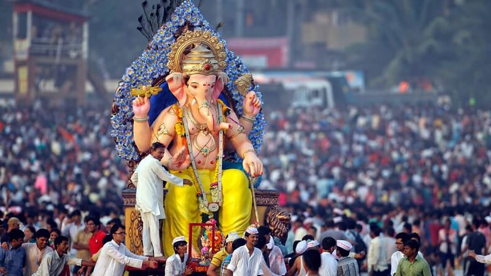

*Diwali*
Diwali, the Festival of Lights, is a major five-day Hindu, Sikh, and Jain festival symbolizing the
victory of light over darkness, good over evil, and knowledge over ignorance, marked by lighting lamps (diyas),
fireworks, feasting, and family gatherings. Celebrated between October and November, it commemorates various
legends, including Lord Rama's return in Hinduism and Lord Mahavira's nirvana in Jainism, with traditions like
creating rangoli, wearing new clothes, and welcoming Lakshmi, the goddess of wealth, for prosperity.
*Eid Mubarak*
Eid al-Fitr is a major Islamic festival celebrating the end of Ramadan (the month of fasting), meaning "Festival of Breaking the Fast," marked by communal prayers, feasts, new clothes, gift-giving (especially money for kids), and charity (Zakat al-Fitr) on the first day of Shawwal (the 10th lunar month) after the new moon is sighted, lasting about three days. Celebrations focus on gratitude, forgiveness, and community, with greetings like "Eid Mubarak" (Blessed Eid).
*Ganesh Chaturthi*
Ganesh Chaturthi is a 10-day Hindu festival celebrating the birth of Lord Ganesha, the remover of obstacles, starting on the fourth day of the Bhadrapada month (Aug/Sep) with the installation of clay idols in homes and pandals, followed by daily prayers, aartis, and cultural events, culminating in a colorful procession and immersion (Visarjan) in water on the final day, symbolizing his return to Mount Kailash.
*Chhatrapati Shivaji Maharaj Jayanti*
Shiv Jayanti celebrates the birth of the legendary Maratha warrior king, Chhatrapati Shivaji Maharaj, on February 19th (Gregorian calendar), honoring his ideals of courage, justice, and nation-building, marked by grand processions, cultural events, and tributes at forts, symbolizing Maratha pride and inspiring patriotism. He founded the Maratha Empire,fought the Mughals, and is remembered for his innovative guerrilla warfare, strong administration, and inclusive governance.